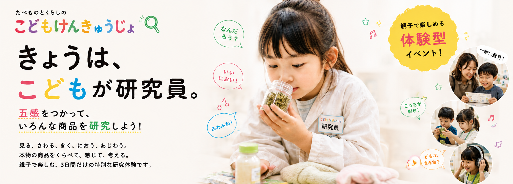

おかし総選挙
きみの「好き！」に一票！
いろいろなおかしを食べくらべ。味や香り、食感を研究して、一番好きなおかしに投票しよう！
親子で楽しめる体験型イベント
食とくらしの こどもけんきゅうじょ
五感をつかって、いろんな商品を研究しよう！
見る、さわる、きく、におう、あじわう。
本物の商品をくらべて、感じて、考える。
親子で楽しむ、3日間だけの特別な研究体験です。
参加無料｜小学6年生までのお子さまと保護者

ABOUT
遊ぶだけじゃない。勉強するだけでもない。
「研究する」という、新しい体験。
「どっちが好き？」「どんなにおい？」「なんで違うんだろう？」――こどもけんきゅうじょでは、子どもたち自身が「こども研究員」になり、企業の商品を五感で研究します。
大人が正解を教えるのではなく、自分で感じて、くらべて、考えて、自分なりの答えを見つける。子どもの「なんで？」が主役になる体験です。
「好き！」も「ちょっと苦手」も、全部立派な研究結果。
FIVE SENSES
色・形・違いを発見。
ふわふわ？つるつる？
どんな音がする？
どんな香り？
どんな味？どっちが好き？
6 RESEARCH MISSIONS
「好き」「気になる」「なんで？」を手がかりに、いろんな研究に挑戦しよう。
きみの「好き！」に一票！
いろいろなおかしを食べくらべ。味や香り、食感を研究して、一番好きなおかしに投票しよう！
ごはんのヒミツを探ろう！
見た目、香り、味、食感。いろんな角度からごはんをくらべて研究してみよう。
遊んで、ためして、考えよう！
実際に遊んで、さわって、ためしてみよう。「もっとこうだったら楽しい！」も研究結果。
キレイのひみつを研究！
香りや使いごこちを体験して、身近な「キレイ」のひみつを見つけよう。
「心地いい！」を見つけよう！
ふわふわ、さらさら、つるつる。いろんな素材をさわって、自分の感覚を研究しよう。
これは、だれが使うもの？
商品をよく観察して、どんな人のためにつくられたものなのかを推理してみよう。
REAL PRODUCTS
研究するのは、企業が実際につくっている商品。教材のためだけにつくられたものではなく、社会とつながっている「本物」に触れるからこそ生まれる発見があります。
「こっちの方が好き！」「もっとこうだったらいいのに。」「なんでこれは違うんだろう？」――正解はありません。子どもが感じたこと、そのものが研究結果です。
FROM KIDS TO SOCIETY
こども研究員から集まった発見や声は、参加企業にも届けられます。大人には思いつかなかった子どもならではの「好き」「なんで？」「もっとこうだったら」が、未来の商品づくりのヒントになるかもしれません。
子どもたちは、社会と一緒に未来を考える小さな研究パートナー。
FOR FAMILY
「こんな味が好きだったんだ。」「こんなところに気づくんだ。」「そんなふうに考えていたんだ。」
普段とは少し違う環境だからこそ見えてくる、わが子の新しい一面。お子さまの研究を一番近くで見ながら、親子で一緒に発見を楽しめます。
HOW TO RESEARCH
会場の「こどもけんきゅうじょ」へ。
きょうから、きみもこども研究員。
五感をつかって商品を研究。
感じたことを自由に伝えよう。
きみの発見が研究結果になります。
ADVANCE ENTRY
参加無料。参加をご希望の方は、事前に参加希望をご登録いただくと当日のご案内がスムーズです。
事前申込の受付方法・参加枠などの詳細は順次ご案内します。
※優先入場・参加確約等の条件は、正式な運用内容をご確認ください。
EVENT INFORMATION
ABOUT US
「こどもけんきゅうじょ」を運営する一般社団法人 日本マタニティフード協会は、妊娠・出産・育児期の家族が、安心して選べる食品・サービスとの出会いを支える協会です。企業とファミリーの間に立ち、認定・売り場・コミュニティ・体験機会を通じて、継続的な接点づくりを行っています。
HOW TO ENTER GOOD LIFE FAIR
「食とくらしの こどもけんきゅうじょ」はGOOD LIFEフェア2026の会場内で開催します。
事前申込と、GOOD LIFEフェア公式の来場手続きは別々に必要です。
こどもけんきゅうじょの
事前申込をしよう！
GOOD LIFEフェア公式で
来場手続きをしよう！
西ホールを目指して
会場へGO！
こども研究員として
研究スタート！
こどもけんきゅうじょへの事前申込だけでは、GOOD LIFEフェア会場には入場できません。必ず公式の来場手続きもお願いします。
FAQ
こどもけんきゅうじょの参加費は無料です。GOOD LIFEフェア会場への入場方法については公式サイトをご確認ください。
小学6年生までのお子さまを対象としています。研究内容によって対象年齢が異なる場合があります。
ご参加いただけます。小さなお子さまは保護者同伴でご参加ください。研究ごとの対象条件は詳細決定後にご案内します。
はい。お子さまの研究の様子を一緒にお楽しみください。
参加方法や申込単位などの詳細は、事前申込受付時にご案内します。
当日の混雑状況や各研究の定員により異なります。詳細は決定次第ご案内します。
当日参加の運用については現在調整中です。参加をご希望の方には事前申込をおすすめします。
参加枠・優先案内等の条件は現在調整中です。確定後、このページでご案内します。
はい。こどもけんきゅうじょへの申込とは別に、GOOD LIFEフェア公式の来場手続きが必要です。
研究内容によって食品を使用する場合があります。アレルギーに関する注意事項は各研究の案内をご確認ください。
KIDS RESEARCHERS WANTED!
見て。さわって。くらべて。考えて。
きみの「なんで？」を研究してみよう。
参加無料｜小学6年生までのお子さまと保護者
2026.9.25 FRI − 9.27 SUN｜東京ビッグサイト